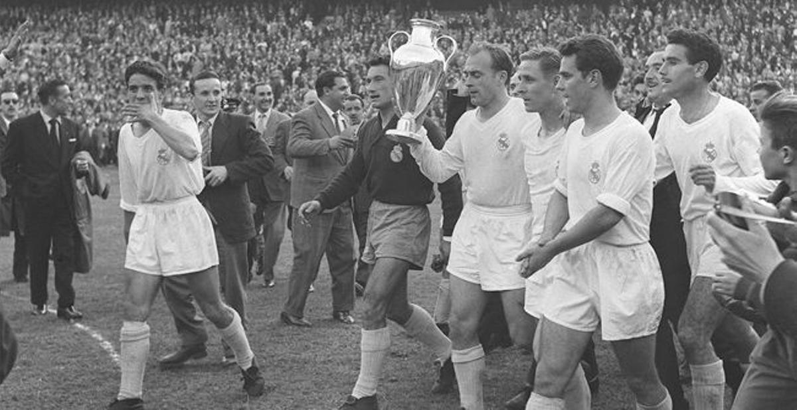
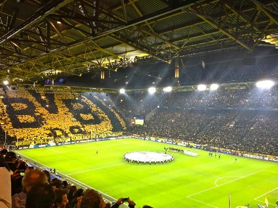
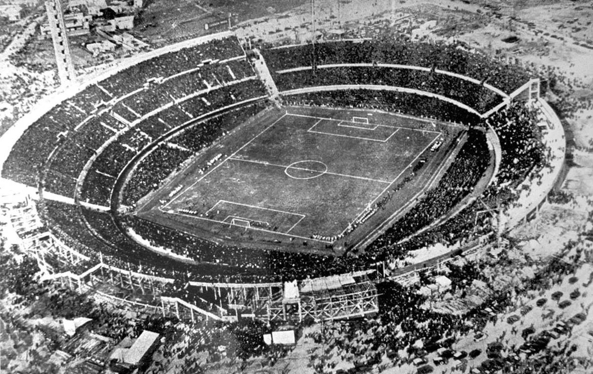
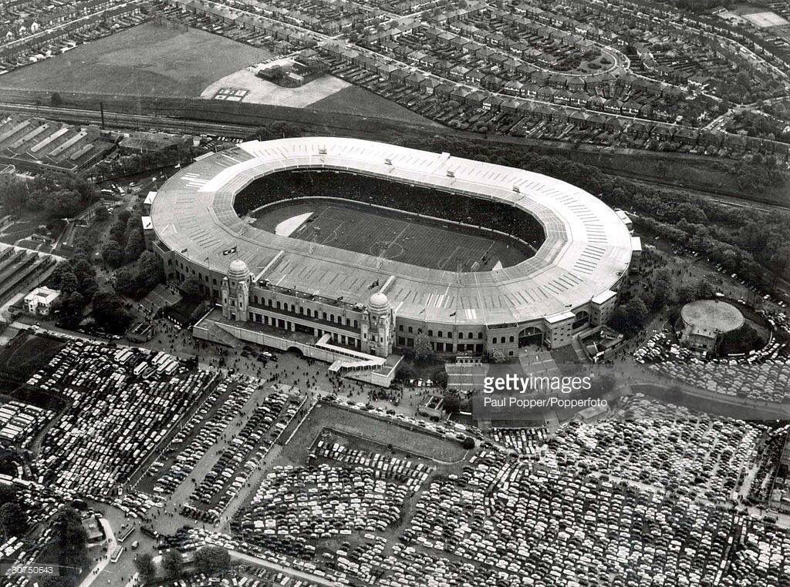
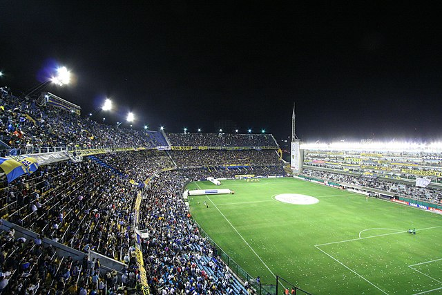
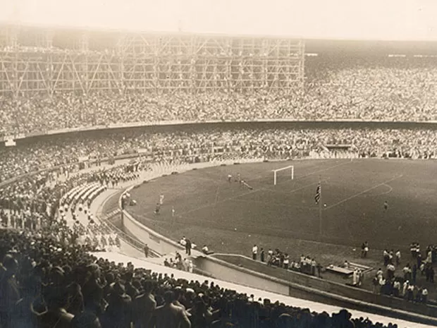
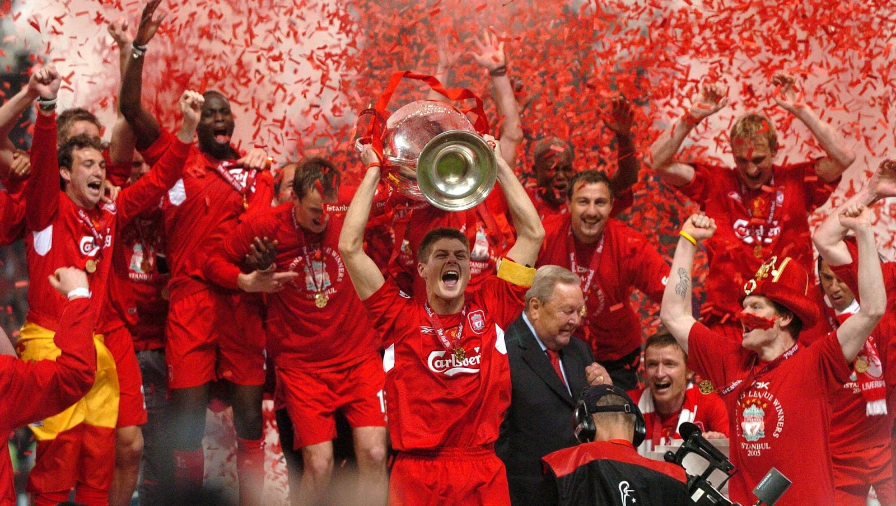
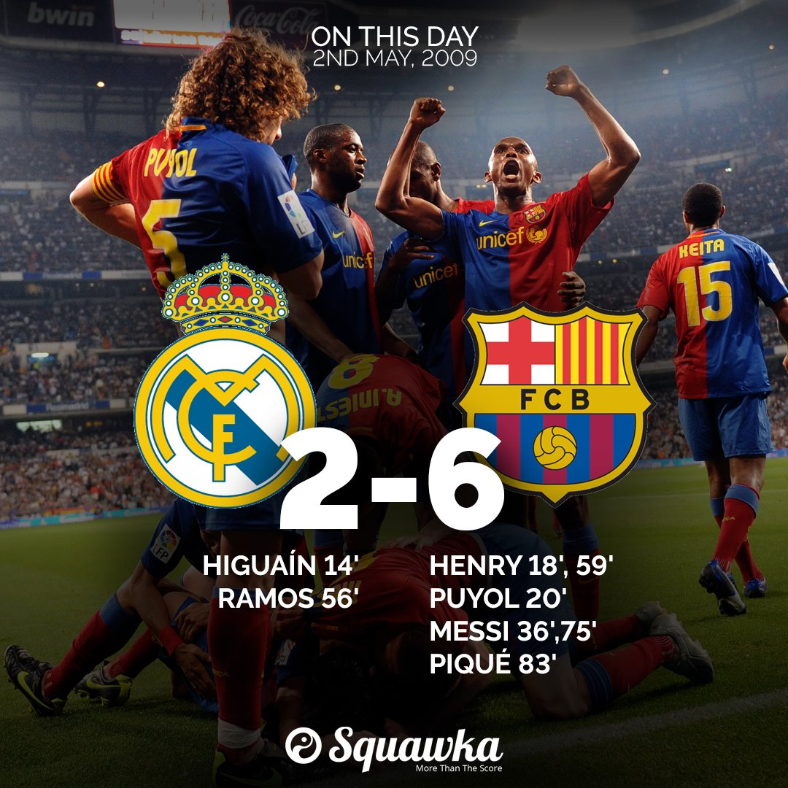
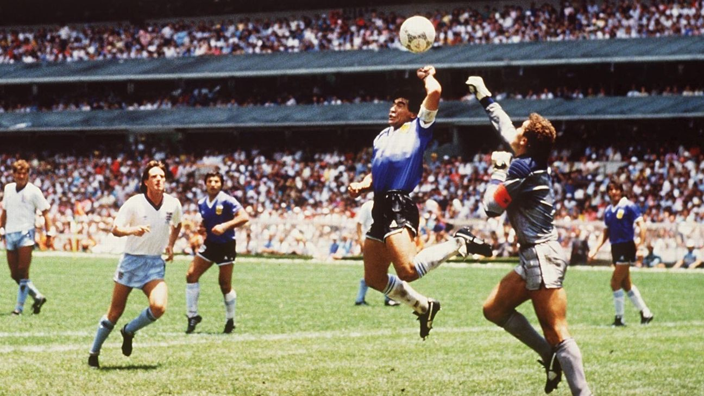
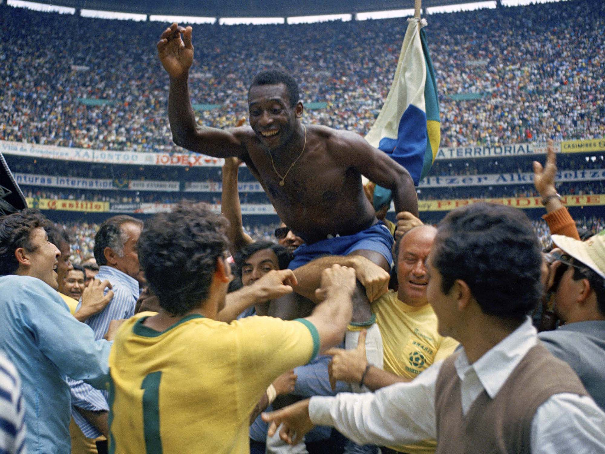

Propósito do Site:
Explore a rica tapeçaria do futebol nas Américas do Sul e na Europa. Nossa missão é oferecer uma jornada única através das tradições, competições e paixões que moldaram o esporte nessas regiões.

Explore a rica tapeçaria do futebol nas Américas do Sul e na Europa. Nossa missão é oferecer uma jornada única através das tradições, competições e paixões que moldaram o esporte nessas regiões.
O futebol é o esporte amador mais popular da América do Sul, além de ser um esporte profissional reverenciado pelos habitantes do continente. O futebol foi introduzido pela primeira vez no continente durante o século XIX, como parte da difusão mundial da cultura britânica iniciada pela diáspora britânica e subsequente aceitação do esporte pela elite anglófila da região
Na Europa, o futebol já foi um ritual de guerra, mas o modelo que conhecemos hoje foi organizado na Inglaterra em 26 de outubro de 1863. Essa é a data da fundação da Football Association, em Londres e o início da profissionalização do esporte no mundo
Na América do Sul, o futebol se originou em algum momento do século XIX. Marinheiros europeus jogaram futebol no porto de Buenos Aires, Argentina, e o esporte se espalhou gradualmente para áreas urbanas próximas. Em 1867, havia uma grande comunidade europeia em Buenos Aires, com muitos trabalhadores britânicos empregados pelas empresas ferroviárias britânicas em uma grande expansão da rede ferroviária
Na Europa, o futebol era praticado por vários colégios entre os anos de 1810 e 1840, mas cada qual seguia um regulamento distinto. Assim, em 1863, uma reunião a Freemason’s Tavern, sediada na rua Great Queen, organizou a prática
O futebol é um esporte que tem uma grande importância cultural na América do Sul e Europa. Ele está profundamente integrado à cultura dessas regiões e tem sido um elemento importante na vida das pessoas ao longo do tempo.
O futebol é um esporte que tem uma longa história na América do Sul e Europa, e tem sido jogado por gerações. Ele é valorizado por sua capacidade de unir as pessoas em torno de um objetivo comum, e é visto como uma forma de expressão cultural. O esporte tem sido usado para promover a identidade nacional e regional, e tem sido um meio de expressão para as pessoas em todo o mundo.
O futebol também tem um valor social e econômico significativo. Ele é capaz de influenciar diversos segmentos da sociedade, incluindo o econômico, político, cultural e social. O esporte é capaz de gerar empregos, estimular a economia local e promover a coesão social.
Em resumo, o futebol é um esporte que tem uma grande importância cultural na América do Sul e Europa. Ele está profundamente integrado à cultura dessas regiões e tem sido um elemento importante na vida das pessoas ao longo do tempo. Além disso, o esporte tem um valor social e econômico significativo.
As ligas de futebol são organizadas de maneiras diferentes em todo o mundo. Algumas ligas usam um sistema de promoção e rebaixamento, onde os times são promovidos ou rebaixados com base em seu desempenho na temporada anterior. Outras ligas usam um sistema de liga fechada, onde os times permanecem na liga independentemente do seu desempenho.
Ligas com sistema de promoção e rebaixamento:
A Premier League da Inglaterra é uma liga que usa um sistema de promoção e rebaixamento. Os três times com a pior pontuação no final da temporada são rebaixados para a segunda divisão, enquanto os dois melhores times da segunda divisão são promovidos para a Premier League.
A La Liga da Espanha é outra liga que usa um sistema de promoção e rebaixamento. Os três times com a pior pontuação no final da temporada são rebaixados para a segunda divisão, enquanto os dois melhores times da segunda divisão são promovidos para a La Liga.
Ligas com sistema de liga fechada:
A Major League Soccer (MLS) dos Estados Unidos é uma liga que usa um sistema de liga fechada. Os times permanecem na liga independentemente do seu desempenho na temporada anterior.
A Superliga Indiana é outra liga que usa um sistema de liga fechada. Os times permanecem na liga independentemente do seu desempenho na temporada anterior.
As competições internacionais de clubes e seleções são muito importantes para os fãs e jogadores de futebol em todo o mundo. Essas competições oferecem uma oportunidade para que os melhores times e jogadores do mundo se enfrentem em partidas emocionantes e altamente competitivas.
Na América do Sul, a Copa Libertadores é uma das competições mais importantes para os clubes. A competição envolve os melhores times da América do Sul, que competem pelo título de campeão continental. A Copa Libertadores é altamente valorizada pelos fãs e jogadores, pois oferece uma oportunidade para que os clubes mostrem sua qualidade em um cenário internacional.
A Copa Sul-Americana é uma competição de futebol organizada pela Confederação Sul-Americana de Futebol (CONMEBOL) desde 2002. É o segundo torneio mais importante de clubes de futebol da América do Sul, atrás apenas da Copa Libertadores da América 1. Participam da Copa Sul-Americana clubes de futebol de países sul-americanos como o Brasil, Argentina, Chile e Equador.
A competição é disputada anualmente e conta com um total de 34 participantes em representação dos países afiliados à CONMEBOL. A final passou a ser disputada em partida única, em sede pré-definida pela CONMEBOL, a partir de 2019.
A Argentina lidera o ranking de conquistas com nove títulos, seguida pelo Brasil, com cinco, e Equador, com três 3. Entre os clubes brasileiros que já venceram a competição estão Athletico Paranaense (2018 e 2021), Internacional (2008), São Paulo (2012), Chapecoense (2016) e Flamengo (2017).
Na Europa, a Liga dos Campeões é a competição mais importante para os clubes. A competição envolve os melhores times da Europa, que competem pelo título de campeão continental. A Liga dos Campeões é altamente valorizada pelos fãs e jogadores, pois oferece uma oportunidade para que os clubes mostrem sua qualidade em um cenário internacional
A UEFA Europa League é uma competição de clubes de futebol organizada pela União das Associações Europeias de Futebol (UEFA) desde 1971. É a segunda competição mais importante de clubes de futebol da Europa, atrás apenas da Liga dos Campeões da UEFA. Participam da UEFA Europa League clubes de futebol de países europeus como a Inglaterra, Espanha, Itália e Alemanha
A competição é disputada anualmente e conta com um total de 48 participantes em representação dos países afiliados à UEFA. O formato atual da competição envolve uma fase de grupos seguida por uma fase eliminatória, culminando na final
O Sevilla é o clube mais bem-sucedido na história da competição, tendo vencido o torneio seis vezes.
A UEFA Europa Conference League é uma competição de clubes de futebol organizada pela UEFA desde 2021. É a terceira competição mais importante de clubes de futebol da Europa, abaixo da Liga dos Campeões e da UEFA Europa League. A competição envolve clubes de países europeus que não se classificaram para a Liga dos Campeões ou para a UEFA Europa League
A competição é disputada anualmente e conta com um total de 32 participantes em representação dos países afiliados à UEFA. O formato atual da competição envolve uma fase de grupos seguida por uma fase eliminatória, culminando na final
As competições internacionais de seleções também são muito importantes para os fãs e jogadores de futebol. A Copa do Mundo é a competição mais importante para as seleções nacionais. A competição envolve as melhores seleções do mundo, que competem pelo título de campeão mundial. A Copa do Mundo é altamente valorizada pelos fãs e jogadores, pois oferece uma oportunidade para que as seleções mostrem sua qualidade em um cenário internacional.
Em resumo, as competições internacionais de clubes e seleções são muito importantes para os fãs e jogadores de futebol em todo o mundo. Essas competições oferecem uma oportunidade para que os melhores times e jogadores do mundo se enfrentem em partidas emocionantes e altamente competitivas.
Bem-vindo à fascinante jornada através das décadas que moldaram a evolução tática do futebol na América do Sul e na Europa. Ao explorar as estratégias inovadoras que marcaram cada época, podemos entender como o jogo se transformou, adaptou e cativou multidões.
Este ensaio de revisão de literatura teve como principal objetivo, verificar a evolução das táticas no futebol, uma ferramenta a qual se considera importantíssima, capaz de decidir uma partida e até mesmo um campeonato. Utilizou-se como base de pesquisa a evolução do esporte de 1860 a 2002, com o objetivo de verificar a evolução das formações e desenvolvimento técnico e tático. o técnico deverá analisar os mais diversos esquemas táticos, conhecer as capacidades individuais dos seus atletas, para poder aplicar o sistema de jogo mais adequado, sempre com o objetivo de um melhor rendimento para sua equipe.
Esquemas táticos são formas, táticas de jogo, as quais o treinador arma, para desestruturar a equipe adversária. Tanto ofensiva como defensivamente, essas formações são de extrema valia para a beleza do futebol. Dessa forma vários esquemas foram estudados, e se conseguiu entender um pouco mais sobre futebol.
O sistema não deve ser mudado constantemente pelo treinador, e sim táticas diferentes que devem ser usadas em função de cada adversário.
Os principais fatores que contribuíram para a evolução dos sistemas foram: as mudanças nas regras do impedimento e as dimensões do campo.
Para que um sistema obtenha êxito é necessário que ele seja fácil de ser assimilado pelos jogadores, pois deve haver um equilíbrio entre o ataque e a defesa, com uma distribuição correta para que haja jogadores suficientes para construir um ataque e um bom número de atletas para ter uma defesa sólida.
O campo pode ser dividido em zonas durante uma partida: zona defensiva, zona de construção e zona ofensiva.
Zona defensiva: este espaço se caracteriza por uma marcação mais forte e por uma constante cobertura. Quando não estão com a posse de bola, os jogadores tem a função de interceptar, antecipar e tomar a bola dos adversários. Quando adquirirem a posse de bola, devem tentar começar o ataque rapidamente, se isso não é possível, seguram a bola com segurança até conseguir iniciar a construção de uma jogada ofensiva.
Zona de construção: esta zona esta situada no meio-campo, e é a área responsável pela criação de jogadas, é o setor mais criativo do time, onde a construção de jogadas é feita através de combinações coletivas. Neste setor é onde o jogo pode ser controlado mantendo a posse de bola as chances de obter sucesso durante a partida, são grandes. No ponto de vista defensivo, é onde se deve fazer uma marcação forte e principalmente ocupar os espaços do campo, procurando dificultar as ações ofensivas da equipe adversária.
Zona ofensiva: nessa zona do campo é onde se deve usar a rapidez, a surpresa, a improvisação com deslocamentos rápidos, dribles, tabelas, entre outros. É a parte do campo que está sempre procurando o gol. Porém para que o sistema funcione de maneira perfeita, quando a posse de bola é perdida, é importante que os jogadores ofensivos façam a ocupação de espaços para que a saída de bola dos adversários seja dificultado.
As táticas de futebol são formas de organizar os jogadores em campo para tentar obter vantagem sobre o adversário. Elas envolvem aspectos como posicionamento, movimentação, marcação, passes, finalizações e outros. As táticas de futebol evoluíram ao longo das décadas, acompanhando as mudanças nas regras, na preparação física, na tecnologia e na cultura do esporte. A seguir, vou apresentar um breve resumo da evolução das táticas de futebol desde o início do século XX até os dias atuais.
Esse foi o primeiro esquema tático a se popularizar no futebol, no final do século XIX e início do século XX. Ele consistia em dois zagueiros, três meio-campistas e cinco atacantes, formando uma pirâmide. Era um esquema muito ofensivo, que priorizava a condução de bola e os dribles. Foi usado por muitas seleções na primeira Copa do Mundo, em 1930.
Esse esquema surgiu na década de 1920, como uma resposta à mudança na regra do impedimento, que passou a exigir apenas dois defensores entre o atacante e a linha de fundo. Ele consistia em três zagueiros, dois volantes, dois meias e três atacantes, formando as letras W e M. Era um esquema mais equilibrado, que valorizava os passes e a movimentação. Foi usado pela Hungria vice-campeã mundial em 1954
Esse esquema surgiu na década de 1950, como uma evolução do W-M. Ele consistia em quatro zagueiros, dois volantes e quatro atacantes, formando uma linha reta. Era um esquema muito ofensivo, que explorava a velocidade e a habilidade dos pontas. Foi usado pelo Brasil campeão mundial em 1958
Esse esquema surgiu na década de 1960, como uma adaptação do 4-2-4. Ele consistia em quatro zagueiros, três meio-campistas e três atacantes, formando um triângulo. Era um esquema mais versátil, que permitia variações entre defesa e ataque. Foi usado pelo Brasil campeão mundial em 1970
Esse esquema surgiu na década de 1970, como uma resposta ao 4-3-3. Ele consistia em quatro zagueiros, quatro meio-campistas e dois atacantes, formando um quadrado. Era um esquema mais sólido, que priorizava a marcação e a posse de bola. Foi usado pela Itália campeã mundial em 1982
Esse esquema surgiu na década de 1980, como uma alternativa ao 4-4-2. Ele consistia em três zagueiros, cinco meio-campistas e dois atacantes, formando um pentágono. Era um esquema mais dinâmico, que aproveitava os laterais como alas ofensivos.
Esse esquema surgiu na década de 1990, como uma variação do 4-4-2. Ele consistia em quatro zagueiros, cinco meio-campistas e um atacante isolado. Era um esquema mais defensivo, que buscava o contra-ataque rápido e a compactação. Foi usado pela Grécia campeã da Eurocopa em 2004
Esse esquema surgiu na década de 2000, como uma evolução do 4-5-1. Ele consistia em quatro zagueiros, três meio-campistas centrais, dois meias ofensivos e um atacante centralizado. Era um esquema mais criativo, que explorava as triangulações e as infiltrações.
Esse esquema surgiu na década de 2010, como uma adaptação do 4-3-2-1. Ele consistia em quatro zagueiros, um volante, quatro meio-campistas e um atacante. Era um esquema mais flexível, que podia mudar de acordo com a situação do jogo. Foi usado pela Alemanha campeã mundial em 2014
Esse esquema surgiu na década de 2020, como uma tendência atual do futebol. Ele consiste em três zagueiros, quatro meio-campistas e três atacantes, formando um losango. É um esquema mais ofensivo, que pressiona o adversário e ocupa os espaços. Foi usado pela Bélgica semifinalista da Copa do Mundo em 2018
O tiki-taka é uma estratégia de futebol que revolucionou o esporte, especialmente na Espanha e no Barcelona. No centro da ideia do tiki-taka está a posse de bola. A ideia é que uma equipe monopolize a posse de bola, usando sua superioridade técnica e movimentação para superar os adversários.
Aqui estão alguns pontos-chave sobre o tiki-taka:
Posse de bola:A ideia central é monopolizar a posse de bola. Isso é feito através de passes curtos e constantes, com o objetivo de limitar o tempo disponível do adversário para criar ações
Criação de espaços:O objetivo é criar espaços que o ataque possa explorar, com um meio-campo capaz de abrir qualquer defesa
Pressão alta:Há também um aspecto defensivo na ideia, pressionando o adversário assim que se perde a bola para recuperá-la ainda no campo adversário
Movimentação e troca de posições:O tiki-taka envolve troca de posições e movimentos inteligentes que podem criar espaços e abrir espaços para o ataque explorar

“Park the Bus” é um termo do futebol que se refere a um estilo de jogo ultra-defensivo. O objetivo principal dessa estratégia é negar ao time adversário qualquer oportunidade de marcar gols. A tática de “Park the Bus” (ou “Estacionar o Ônibus”, em português) é essencialmente usar o campo com o único propósito de não sofrer gols. Jogar ofensivamente é um pensamento secundário, pois nesta estratégia o que importa é frustrar o adversário e não sofrer. Se o jogo terminar 0-0, é considerado um resultado aceitável. Esse termo foi atribuído a José Mourinho em 2004, quando ele era técnico do Chelsea Football Club durante sua primeira passagem pelo clube

O estilo de jogo Gegenpress é uma tática de futebol que se concentra em pressionar o adversário logo após a perda da bola pelo time. O objetivo é recuperar a posse de bola o mais rápido possível e evitar que o adversário tenha tempo para se reorganizar defensivamente. O termo “Gegenpress” é uma palavra alemã que significa “contra-pressão”.
O Gegenpress é um estilo de jogo que foi popularizado pelo técnico alemão Jurgen Klopp, que o utilizou com sucesso em suas equipes no Mainz, Borussia Dortmund e Liverpool. A tática envolve uma abordagem agressiva e intensa, com jogadores pressionando o adversário em todos os setores do campo. Os jogadores são instruídos a se mover rapidamente para fechar espaços e forçar erros do adversário.
O Gegenpress também envolve uma abordagem de jogo em equipe, com jogadores trabalhando juntos para recuperar a bola e criar oportunidades de gol. A tática exige um alto nível de condicionamento físico e mental dos jogadores, pois eles precisam manter um alto nível de intensidade durante todo o jogo.
Em resumo, o Gegenpress é um estilo de jogo agressivo e intenso que se concentra em pressionar o adversário logo após a perda da bola. É uma tática eficaz para equipes que desejam recuperar rapidamente a posse de bola e criar oportunidades de gol.
O Dinizismo é um estilo de jogo de futebol que se concentra em uma abordagem ofensiva e agressiva, com muita posse de bola e toques curtos desde a defesa. O técnico Fernando Diniz é o criador e expoente máximo desse estilo de jogo, que tem sido implementado em todos os clubes por onde passou, incluindo o Fluminense e o São Paulo.
A base principal do Dinizismo é o entusiasmo dos jogadores, que são instruídos a se movimentar rapidamente para fechar espaços e forçar erros do adversário. A tática envolve uma abordagem de jogo em equipe, com jogadores trabalhando juntos para criar oportunidades de gol. O estilo de jogo valoriza a ousadia e a criatividade em detrimento da estratégia defensiva.
O Dinizismo também envolve uma abordagem de jogo em constante evolução, com o técnico sempre buscando novas maneiras de melhorar o desempenho da equipe. A tática exige um alto nível de condicionamento físico e mental dos jogadores, pois eles precisam manter um alto nível de intensidade durante todo o jogo.
Em resumo, o Dinizismo é um estilo de jogo ofensivo e agressivo que se concentra em muita posse de bola e toques curtos desde a defesa. É uma tática eficaz para equipes que desejam criar oportunidades de gol e jogar um futebol envolvente.
A atmosfera em um estádio de futebol é uma parte crucial da experiência do jogo, tanto para os jogadores quanto para os torcedores. Aqui estão alguns pontos que você pode considerar ao examinar o fervor dos fãs e a atmosfera nos estádios:
Proximidade com o campo: A conexão entre o espectador e o evento é crucial para criar uma boa atmosfera. Quanto mais perto os espectadores estiverem do campo, melhor será a atmosfera
Design do estádio: O design do estádio pode ter um grande impacto na atmosfera. Estádios como o Millennium Stadium em Cardiff e o Juventus Stadium em Turim são como ravinas, dando aos torcedores a sensação de estarem em cima do campo
Nível de ruído: O nível de ruído dos torcedores pode contribuir significativamente para a atmosfera do estádio. Por exemplo, o Türk Telekom Arena, casa do Galatasaray, entrou no Livro dos Recordes Guinness por criar o ruído mais alto já registrado em um estádio de futebol, atingindo 131,76 decibéis
Tradições dos torcedores: As tradições únicas dos torcedores também desempenham um papel importante na criação da atmosfera do estádio. Isso pode incluir cantos específicos do clube, exibições de bandeiras e outros rituais de torcida.
Estádios emblemáticos: Alguns estádios são conhecidos mundialmente por suas atmosferas incríveis. Por exemplo, La Bombonera, casa do Boca Juniors, é conhecida por sua atmosfera elétrica e foi classificada como o estádio com a melhor atmosfera no futebol mundial pela France Football
O futebol contribui significativamente para a economia. Por exemplo, o futebol da Premier League contribuiu com £7,6 bilhões para a economia do Reino Unido durante a temporada 2019/20, apesar dos desafios significativos apresentados pela COVID-19.
O futebol de base (amador) também tem um impacto econômico considerável. Na Inglaterra, mais de 13,5 milhões de pessoas jogam futebol regularmente, contribuindo com £10,16 bilhões para a sociedade e a economia.
O futebol também gera empregos. A Premier League e seus clubes geraram um total de 94.000 empregos em todo o Reino Unido.
O futebol desempenha um papel fundamental na formação e consolidação das identidades nacionais em todo o mundo. Ele oferece um espaço para expressar protestos e as pessoas podem tentar aproveitar as forças do nacionalismo populista.
O futebol também é uma ferramenta poderosa para a inclusão social. A UEFA apoia a campanha anual do parceiro de responsabilidade social CAFE, pedindo acesso e inclusão de pessoas com deficiência em todos os aspectos do jogo.
Além disso, o futebol pode ajudar a estimular a inclusão e a integração, levando à melhoria da saúde e do bem-estar daqueles que jogam.
O racismo é um problema significativo no futebol. Jogadores com pele mais clara são regularmente e esmagadoramente elogiados por sua inteligência, ética de trabalho e qualidade em comparação com aqueles com pele mais escura, que são reduzidos a atributos físicos e atléticos.
As redes sociais têm sido um campo de batalha para o racismo no futebol. De acordo com uma pesquisa, 43% dos jogadores disseram ter experimentado abuso racista direcionado.
As autoridades do futebol introduziram medidas para combater o racismo no futebol, incluindo um protocolo de três etapas para combater a discriminação nas partidas de futebol, que pode levar os árbitros a abandonar as partidas.
A corrupção no esporte é um problema global que requer uma resposta internacional unificada. Estima-se que até $1,7 trilhão seja apostado em mercados de apostas ilícitas a cada ano.
A corrupção no esporte não é um fenômeno novo, mas as últimas duas décadas testemunharam um aumento substancial nas atividades criminosas nesta área.
O relatório global sobre corrupção no esporte destaca a necessidade urgente de fortalecer os quadros legais, políticos e institucionais para prevenir e responder a diferentes manifestações de corrupção e crime no esporte em níveis global, regional e nacional.
A Copa do Mundo de 2022 no Catar tem sido objeto de controvérsias e alegações de corrupção. No entanto, não há evidências diretas que liguem o Catar a qualquer tipo de corrupção na obtenção de sua candidatura à Copa do Mundo.
O ex-presidente da UEFA e estrela do futebol da Juventus, Michel Platini, foi preso em junho de 2019 por suspeita de corrupção relacionada à decisão de nomear o Catar como país anfitrião da Copa do Mundo de 2022.
A Sportradar Integrity Services detectou potenciais casos de manipulação de resultados em mais de 1.100 partidas esportivas desde abril de 2020. O futebol foi identificado como o esporte mais vulnerável à corrupção relacionada às apostas.
Jogadores como Anthony Martial, Marcus Rashford, Axel Tuanzebe e Lauren James do Manchester United, Antonio Rudiger e Reece James do Chelsea, Yan Dhanda do Swansea, Romaine Sawyers do West Brom e Alex Jankewitz do Southampton foram alvo recente de abusos raciais nas redes sociais.
Os dados mostram que um em cada dez jogos de futebol na temporada 2019-20 teve um incidente de crime de ódio na Inglaterra e no País de Gales. O número de prisões por cantos racistas ou indecentes mais que dobrou de 2018-19 para 2019-20.
Protocolo de três etapas: As autoridades do futebol introduziram um protocolo de três etapas para combater a discriminação nas partidas de futebol, que pode levar os árbitros a abandonar as partidas.
Suspensão De Dez Jogos: A FA (Football Association) introduziu uma suspensão de dez jogos para treinadores e jogadores considerados culpados de comportamento discriminatório.
Regulamentos Disciplinares: Os órgãos governamentais do futebol podem tentar combater o racismo por meio de regulamentos disciplinares. A FA pode penalizar clubes, sob a Regra FA E3, com proibições de jogos e multas.
Cooperação com o Governo: A FA pediu ao governo que trabalhe junto com os órgãos governamentais do esporte para combater o racismo.
Ação contra abusos online: O governo está trabalhando em conjunto com a Premier League e outras autoridades do futebol para examinar casos recentes de abuso de jogadores online e identificar o que mais precisa ser feito.

O mercado de transferências de futebol é um fenômeno global que envolve a movimentação de jogadores entre clubes em diferentes continentes. Aqui estão alguns pontos importantes sobre a movimentação de jogadores entre a América do Sul e a Europa:
Jogadores Sul-Americanos na Europa: Os jogadores sul-americanos têm sido uma parte integral do futebol na Europa por muitas décadas. Após a liberalização e globalização do mercado de transferências nos anos 90, o número de jogadores sul-americanos na Europa explodiu. A disparidade financeira entre os clubes europeus e o resto do mundo perpetua um sistema de “dreno de talentos”, através do qual muitos jogadores se mudam para a Europa em uma idade muito jovem e passam seus melhores anos de carreira lá.
Valor de Mercado: O valor estimado de mercado para os jogadores sul-americanos que jogam nas cinco principais ligas europeias (Premier League inglesa, Bundesliga alemã, LaLiga espanhola, Ligue 1 francesa e Serie A italiana) é baseado em algoritmos proprietários. Por exemplo, Vinícius Júnior, que joga pelo Real Madrid, tem uma avaliação de 136 milhões de euros.
Transferências Recentes: O site Transfermarkt é uma excelente fonte para acompanhar as últimas transferências e rumores do mercado. Ele fornece informações atualizadas sobre as transferências mais recentes, os valores de mercado dos jogadores e as notícias mais recentes.
Análise da Rede do Mercado de Transferências: Uma análise da rede do fluxo de taxas de transferência entre os clubes das principais ligas europeias de oito países entre 1992 e 2020 pode ajudar a entender o mercado de transferências de cada ano
Neymar: A transferência de Neymar do Barcelona para o Paris Saint-Germain em 2017 detém o recorde da transferência mais cara da história do futebol. O PSG pagou €222 milhões, tornando Neymar não apenas a transferência mais cara da história, mas também a única a ultrapassar a barreira dos €200 milhões.
Kylian Mbappé: A transferência de Kylian Mbappé do Monaco para o PSG em 2018 é a segunda mais cara, com um valor de €180 milhões.
Philippe Coutinho: A transferência de Philippe Coutinho do Liverpool para o Barcelona em 2018 custou €145 milhões, tornando-se a terceira transferência mais cara.
João Félix: A transferência de João Félix do Benfica para o Atlético Madrid em 2019 custou €126 milhões
Enzo Fernández: A transferência de Enzo Fernández do Benfica para o Chelsea em 2023 custou €121 milhões
Direitos de transmissão: Os direitos de transmissão domésticos e internacionais constituem uma parte importante da receita de um clube.
Vendas no dia do jogo: As vendas no dia do jogo, incluindo ingressos, alimentos e bebidas, são extremamente importantes para os clubes de futebol.
Aluguel e tours do estádio: Os clubes também geram receita alugando seus estádios e oferecendo tours.
Vendas de mercadorias: As vendas de mercadorias, incluindo camisas e outros produtos com a marca do clube, também contribuem para a receita.
Acordos de patrocínio: Os acordos de patrocínio podem ser uma fonte significativa de receita para os clubes
Premier League (Inglaterra): A Premier League é a liga de futebol mais rica do mundo, com receitas que totalizaram cerca de £5.7 bilhões. O valor estimado da Premier League é de $9.03 bilhões e €8.9 bilhões
La Liga (Espanha): A La Liga, que abriga clubes como Real Madrid e FC Barcelona, gerou cerca de £3.8 bilhões em receita anual. O valor estimado da La Liga é de $5.06 bilhões e €5 bilhões
Bundesliga (Alemanha): A Bundesliga gerou cerca de £3.6 bilhões em receitas na última temporada. O valor estimado da Bundesliga é de $4.18 bilhões
Serie A (Itália): A Serie A gerou cerca de £1.85 bilhões em receita no último ano. O valor estimado da Serie A é de $4.88 bilhões e €5.1 bilhões
Ligue 1 (França): A Ligue 1 tem um valor estimado de $3.88 bilhões
Manchester City: €731 milhões
Real Madrid: €713.8 milhões
Liverpool: €701.7 milhões
Manchester United: €688.6 milhões
Paris Saint-Germain (PSG): €654.2 milhões
Bayern Munich: €653.6 milhões
Barcelona: €638.2 milhões
Chelsea: €568.3 milhões
Tottenham Hotspur: €523 milhões
Arsenal: €433.5 milhões
Brasileirão (Brasil): A Série A do Campeonato Brasileiro é considerada a melhor liga de futebol da América do Sul pela IFFHS1. O Brasil tem o maior número de clubes de futebol na lista dos 50 clubes mais valiosos da América, com 14 equipes2. Além disso, o Corinthians é um dos clubes mais valiosos da América Latina, com um valor de $582.3 milhões.
Primera División (Argentina): A Primera División da Argentina é uma das ligas mais fortes da América do Sul. Os times da Argentina ganharam o maior número de títulos internacionais, com um total de 73, incluindo 25 Copas Libertadores. A Argentina tem 7 equipes na lista dos 50 clubes mais valiosos da América.
Liga MX (México): Embora o México esteja localizado na América do Norte, sua liga, a Liga MX, é uma das mais ricas das Américas. A Liga MX pode ser a liga mais rica da América do Sul e é muito popular.
Flamengo (Brasil): Valor estimado em torno de 1 bilhão de dólares.
Palmeiras (Brasil): Valor estimado em torno de 700 milhões a 1 bilhão de dólares.
Boca Juniors (Argentina): Valor estimado em torno de 400 a 500 milhões de dólares.
River Plate (Argentina): Valor estimado em torno de 300 a 400 milhões de dólares.
Corinthians (Brasil): Valor estimado em torno de 400 a 500 milhões de dólares.
Análise de Vídeo: A análise de vídeo começou a ser usada no futebol na década de 1980. Isso permitiu que treinadores e jogadores assistissem suas partidas repetidamente, analisando-as e vendo jogadas de uma nova perspectiva.
Tecnologia de Treinamento: A tecnologia tem sido usada para melhorar o treinamento e levar os jogadores a níveis mais altos do que nunca. Monitores de frequência cardíaca, rastreadores GPS, sistemas avançados de monitoramento e câmeras, aplicativos para rastrear jogos oficiais e sessões de treinamento gravadas por drones já estão em uso para coletar vastas informações.
Previsão de Lesões: A inteligência artificial pode ser usada para descobrir ganhos marginais de desempenho importantes, mantendo um jogador em ótimas condições ou prevendo quando uma lesão pode ocorrer.
Replays Precisos: Os replays precisos se tornaram comuns no futebol, resultando em menos erros cometidos pelos árbitros.
Apostas Esportivas: Com o avanço da tecnologia, um número crescente de fãs de futebol está se voltando para as apostas esportivas em cassinos online e sites de apostas.
Experiência do Telespectador: Com um número crescente de fãs de futebol acompanhando a ação de seu time favorito em casa ou em movimento, a experiência do telespectador em casa passou por uma série de mudanças.
Realidade Aumentada e Virtual: A Realidade Aumentada (AR) e a Realidade Virtual (VR) estão sendo usadas para melhorar a experiência dos fãs, permitindo que eles experimentem o jogo de novas maneiras.
Análise de Dados: As equipes estão cada vez mais confiando em dados e insights de ferramentas de análise para refinar suas estratégias e melhorar a análise de desempenho.
Aplicações Móveis: As aplicações móveis estão sendo usadas para fornecer aos fãs acesso a estatísticas em tempo real, destaques do jogo e outras informações.
Tecnologia Semi-Automatizada de Fora de Jogo: Esta tecnologia foi usada na Copa do Mundo da FIFA 2022™ para ajudar os árbitros a tomar decisões mais precisas sobre situações de fora de jogo.
Tecnologia de Rastreamento de Bola: A validação da tecnologia de rastreamento de bola e dados de rastreamento em tempo real está ampliando as fronteiras para os Sistemas Eletrônicos de Desempenho e Rastreamento (EPTS).
Tecnologia VAR Light: A Confederação Asiática de Futebol testou o conceito VAR Light no Torneio Piloto do Campeonato Feminino de Clubes da AFC 2021.
Essas tecnologias estão mudando o futebol de maneiras nunca antes vistas, desde a forma como os jogos são arbitrados até a experiência dos fãs.

O Manchester United de Sir Alex Ferguson em 1999 é lembrado como uma das melhores equipes da história do futebol. Eles conquistaram a tríplice coroa da Premier League, FA Cup e UEFA Champions League naquela temporada. Aqui está uma análise tática de como eles jogavam:
Formação Básica: A equipe geralmente jogava em uma formação 4-4-2.
Fase Defensiva: Na fase defensiva, a equipe se organizava em um 4-4-1-1, 4-4-2 ou 4-1-3-2.
Fase Ofensiva: Na fase ofensiva, a equipe se transformava em um 3-2-3-2 ou 2-3-1-4.
Posse de Bola: A construção do jogo era baseada no longo lançamento do goleiro Peter Schmeichel para os atacantes, que por sua vez distribuíam a bola para as laterais onde Ryan Giggs e Gary Neville avançavam até a linha de fundo para cruzar. David Beckham atuava como um maestro no meio-campo, alimentando seus companheiros com passes precisos. Outra arma letal eram as infiltrações de Paul Scholes no meio-campo.
Sem Posse de Bola: Na fase sem posse de bola, a equipe tentava recuperar a bola imediatamente, mas se perdessem o primeiro pressing, recuavam imediatamente para o seu próprio campo. Roy Keane atuava como um escudo defensivo entre a defesa e o meio-campo, enquanto Jaap Stam era muito bom em quebrar a linha e pressionar os atacantes com cobertura de Ronny Johnsen.
O Barcelona de Pep Guardiola na temporada de 2010-2011 é amplamente lembrado como uma das melhores equipes de futebol de todos os tempos. Aqui estão alguns pontos-chave sobre o estilo de jogo e a formação da equipe:
Posse de bola: A equipe era conhecida por seu controle de bola quase perfeito e posse de bola dominante, muitas vezes mantendo mais de 70% da posse de bola.
Estilo de jogo: O Barcelona jogava um futebol marcante, com ênfase no passe e movimento. Eles dominavam o adversário e não o deixavam jogar.
A equipe era conhecida por seu controle de bola quase perfeito e posse de bola dominante, muitas vezes mantendo mais de 70% da posse de bola.
O Barcelona jogava um futebol marcante, com ênfase no passe e movimento.
A defesa do Barcelona era sólida com jogadores como Piqué e Puyol no centro da defesa, Abidal na lateral esquerda e Daniel Alves na lateral direita.
Sergio Busquets desempenhava um papel crucial como volante defensivo, protegendo a linha defensiva e interrompendo os ataques adversários.
O Barcelona era conhecido por seu estilo de jogo “tiki-taka”, que se caracteriza pela manutenção da posse de bola através de passes curtos e movimentação constante.
Xavi e Iniesta eram fundamentais neste aspecto, controlando o meio-campo com sua habilidade para manter a posse de bola e criar oportunidades de gol.
Mesmo sem a posse de bola, o Barcelona era eficaz em aplicar pressão alta para recuperar a bola rapidamente.
A equipe era conhecida por sua intensa pressão após a perda da posse, com os jogadores trabalhando juntos para cercar o portador da bola adversário e forçar erros.
Outras características: As equipes treinadas por Guardiola são conhecidas pela utilização do chamado falso 9, marcação à pressão, altas taxas de posse de bola, obsessão pelo controle da bola e do ritmo do jogo, e constante revezamento no elenco para diminuir a chance de lesão.
O Milan de Arrigo Sacchi, que atuou no final dos anos 80 e início dos 90, é lembrado como uma das melhores equipes de futebol de todos os tempos. Aqui estão alguns pontos-chave sobre o estilo de jogo e a formação da equipe:
Estilo de jogo: Sacchi criou uma equipe baseada no futebol total da Holanda de Johan Cruijff, com forte pressão e contra-ataques letais. Com a bola, o time impunha o próprio jogo e obrigava o adversário a seguir o ritmo imposto. Mesmo sem a bola, o Milan era eficaz em aplicar pressão alta para recuperar a bola rapidamente.
Formação da equipe: O Milan jogava num 4-4-2 ofensivo e cheio de movimentação, com ou sem a bola. A equipe era composta por jogadores como Baresi, Maldini, Ancelotti, Rijkaard, Gullit e van Basten.
Desempenho: Sob a liderança de Sacchi, o Milan conquistou dois Mundiais Interclubes (1989 e 1990), duas Ligas dos Campeões da UEFA (1988-1989 e 1989-1990), duas Supercopas da UEFA (1989 e 1990), um Campeonato Italiano (1987-1988) e uma Supercopa da Itália (1988).


O São Paulo de Telê Santana, que atuou no início da década de 1990, é lembrado como uma das melhores equipes de futebol de todos os tempos. Aqui estão alguns pontos-chave sobre o estilo de jogo e a formação da equipe:
Estilo de jogo: As equipes de Telê Santana eram conhecidas pela ofensividade. Ele implementou um estilo de jogo baseado no futebol total, com forte pressão e contra-ataques letais.
Formação da equipe: Telê Santana dirigiu o São Paulo em duas oportunidades, por seis meses em 1973 e no início da década de 1990. Durante sua gestão, o São Paulo conquistou duas vezes a Taça Libertadores da América e a Copa Intercontinental.
Desempenho: Sob a liderança de Telê Santana, o São Paulo teve 198 vitórias, 121 empates e 91 derrotas. Em casa, o São Paulo venceu 120 de 181 jogos disputados.
Acompanhamento próximo dos jogadores: Telê acompanhava de perto tanto os jogadores jovens quanto os veteranos. Ele também orientava os jogadores sobre o futuro e o comportamento fora de campo.
Pressão psicológica: Às vezes, Telê recorria à pressão psicológica como forma de preparar seus atletas antes dos momentos decisivos.
Rotina de treinamento intensiva: Durante os anos de 1992 e 1993, Telê Santana teve uma rotina extremamente cansativa no comando do São Paulo. Em 1992, o treinador esteve em ação em 84 oportunidades pelo clube. Na temporada seguinte, foram 85 partidas trabalhando no time do Morumbi.

O Santos FC dos anos 60 é considerado um dos maiores times da história do futebol. Durante essa década, o time conquistou uma série de títulos importantes, incluindo:
Bicampeonato Mundial Interclubes (1962 e 1963)
Bicampeonato da Copa Libertadores da América (1962 e 1963)
Campeonato da Supercopa Sul-Americana (1968)
Campeonato da Recopa Mundial (1968)
Pentacampeonato da Taça Brasil (1961, 1962, 1963, 1964 e 1965)
Campeonato do Torneio Roberto Gomes Pedrosa (1968)
Tricampeonato do Torneio Rio-São Paulo (1963, 1964 e 1966)
Octacampeonato Paulista (1960, 1961, 1962, 1964, 1965, 1967, 1968 e 1969)
O time-base era composto por: Gylmar; Lima (Carlos Alberto Torres), Mauro, Calvet e Dalmo; Zito e Mengálvio (Clodoaldo); Dorval, Coutinho (Toninho Guerreiro), Pelé e Pepe (Edu). Os técnicos eram Lula e Antoninho
O Santos era conhecido por seu futebol ofensivo e vistoso. Um exemplo fictício de como era um gol comum do Santos na década de 60 seria: "Bola com Mauro, ele toca para Zito, que faz a finta, deixa com Calvet, rola pra Mengálvio, passa por um, olha para o canto, aparece Coutinho que recebe, finta um, dois, deixa com Pepe, driblou o zagueiro, driblou mais um, passou pra Pelé, chapelou um, chapelou dois, fuzilou! Goooool! Golaço do Santos!"
Pelé foi uma figura central nesse time. Ele jogou de maneira excepcional por mais de uma década, fez o Santos ser conhecido mundialmente e se tornou o maior jogador do século. Além disso, Zito foi essencial nas conquistas mais importantes do Santos e também do Brasil nos anos 50 e 60. Ele ganhou o apelido de “Gerente”, por comandar o meio de campo do time
O Flamengo de 1981 é considerado um dos maiores times da história do futebol brasileiro. Esse time conquistou o Campeonato Carioca, a Copa Libertadores da América e o Campeonato Mundial Interclubes.
O Flamengo era conhecido por seu futebol ofensivo e vistoso. Zico era uma figura central nesse time. Ele jogou de maneira excepcional durante essa temporada e fez o Flamengo ser conhecido mundialmente2. Além disso, Andrade foi essencial nas conquistas mais importantes do Flamengo nesse ano. Ele ganhou o apelido de “Gerente”, por comandar o meio de campo do time.
Um exemplo fictício de como era um gol comum do Flamengo em 1981 seria: "Bola com Leandro, ele toca para Andrade, que faz a finta, deixa com Mozer, rola pra Adílio, passa por um, olha para o canto, aparece Zico que recebe, finta um, dois, deixa com Nunes, driblou o zagueiro, driblou mais um, passou pra Júnior, chapelou um, chapelou dois, fuzilou! Goooool! Golaço do Flamengo!".
Estádio Santiago Bernabéu - Madrid, Espanha: O Real Madrid se sagrou pela primeira vez campeão europeu diante da Fiorentina na final da Liga dos Campeões da Europa de 1957
Estádio Signal Iduna Park - Dortmund, Alemanha: Este estádio tem sido palco de muitos jogos emocionantes do Borussia Dortmund, incluindo vitórias memoráveis na Bundesliga e na Liga dos Campeões da UEFA
Estádio Centenário - Montevidéu, Uruguai: Este estádio é famoso por ser o local onde o Uruguai venceu a primeira Copa do Mundo da FIFA em 1930
Estádio de Wembley - Londres, Inglaterra: Wembley tem sido palco de muitos momentos memoráveis, incluindo a vitória da Inglaterra na final da Copa do Mundo da FIFA de 1966
La Bombonera - Buenos Aires, Argentina: Este estádio é a casa do Boca Juniors e tem sido palco de muitas vitórias memoráveis na Copa Libertadores da América
Estádio do Maracanã - Rio de Janeiro, Brasil: O Maracanã é famoso pelo “Maracanaço”, quando o Uruguai venceu o Brasil na final da Copa do Mundo da FIFA de 1950
San Siro - Milão, Itália: O AC Milan sofreu uma derrota histórica para o Liverpool na final da Liga dos Campeões da UEFA de 2005 neste estádio
Estádio Santiago Bernabéu - Madrid, Espanha: O Real Madrid sofreu uma derrota histórica para o Barcelona por 6-2 em 2009 neste estádio
A mão de Deus: Durante a Copa do Mundo de 1986, o lendário jogador argentino Diego Maradona marcou um gol usando a mão na partida contra a Inglaterra. O lance ficou conhecido como “A mão de Deus” e despertou discussões acaloradas sobre fair play e ética no esporte
Final da Copa do Mundo de 1970: Considerado por muitos como um dos melhores jogos da história do futebol, a final da Copa do Mundo de 1970 foi disputada entre Brasil e Itália no Estádio Azteca, na Cidade do México
Pelé: Considerado por muitos como o maior jogador de futebol de todos os tempos, Pelé levou o Brasil a três títulos da Copa do Mundo e deixou uma marca indelével no Santos FC e no New York Cosmos.
Diego Maradona: Apesar de sua carreira ter sido marcada por controvérsias fora de campo, Maradona é lembrado por suas habilidades extraordinárias em campo e por levar a Argentina ao título da Copa do Mundo de 1986
Luis Suárez: Durante a Copa do Mundo de 2014, Suárez, atacante do Uruguai, foi banido por morder Giorgio Chiellini, da Itália
Zinedine Zidane: Na final da Copa do Mundo de 2006, Zidane foi expulso por dar uma cabeçada no peito do italiano Marco Materazzi.
Os estádios de futebol são mais do que apenas locais para jogos; eles são uma parte importante do patrimônio cultural de uma nação. Eles são locais onde a história é feita, onde as emoções são vividas e onde as memórias são criadas
A preservação desses estádios como patrimônio cultural é uma maneira importante de garantir que o legado do futebol seja transmitido para as gerações futuras. Isso pode ser feito de várias maneiras, incluindo a manutenção da estrutura física do estádio, a criação de museus ou exposições no local e a realização de eventos comunitários e educacionais.
Além disso, alguns estádios estão sendo projetados de maneira sustentável e multifuncional, o que contribui para a sua preservação a longo prazo. Esses estádios não só servem como locais para jogos de futebol, mas também podem ser usados para uma variedade de outros eventos, como shows, exposições e eventos comunitários
Por fim, é importante lembrar que o futebol é mais do que apenas um jogo; é uma parte importante da cultura e da identidade de uma nação. Ao preservar esses estádios como patrimônio cultural, estamos garantindo que o legado do futebol continue vivo para as gerações futuras
---------------------------------------------------------------------------------------------------------------------------------------------------------------------------------------------------------------------------------------------------------------------------------